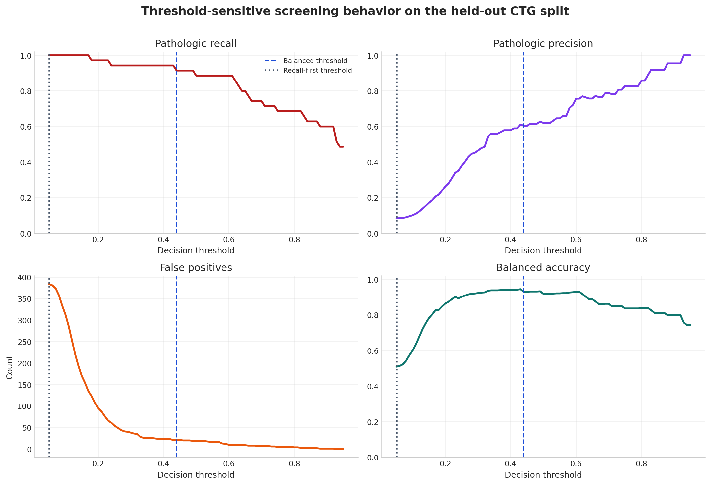

QAOA improvement
Graph conditioning improves the learned QAOA baseline from 0.8208 to 0.8682 mean approximation ratio on held-out transcriptomic graphs.
This page serves as the supporting-materials portal for the repository. It focuses on the same validated findings as the root summary: improved graph-conditioned QAOA initialization and stronger graph-based CTG screening behavior at the selected operating point.
Graph conditioning improves the learned QAOA baseline from 0.8208 to 0.8682 mean approximation ratio on held-out transcriptomic graphs.
Median runtime falls from 675.9 ms to 0.256 ms, allowing optimization-quality decisions at inference speed.
ResidualClinicalGCN improves the prior graph baseline and reduces false alarms across several existing screening baselines.
Combined graph-conditioned research story across transcriptomic QAOA optimization and biomedical screening.
Transcriptomic graph construction, depth-2 benchmarking, learned initialization, runtime evidence, and related diagnostics.
CTG similarity-graph modeling, held-out evaluation, operating-point analysis, and robustness reporting.
| Comparison | Existing model | This project | Gain |
|---|---|---|---|
| Prior-style learned baseline | 0.8208 | 0.8682 | +0.0474 |
| Direct classical search runtime | 675.9 ms | 0.256 ms | 2640x faster |
| Objective retention | reference | 99.95% | deployment-grade retention |
| Comparison | Existing model | This project | Gain |
|---|---|---|---|
| AdaptiveBioGCN | 96.7% accuracy | 98.8% accuracy | +2.1 percentage points |
| Logistic regression | 31 TP, 21 FP | 31 TP, 1 FP | 20 fewer false alarms |
| Random forest | 29 TP, 7 FP | 31 TP, 1 FP | 2 more TP, 6 fewer FP |


